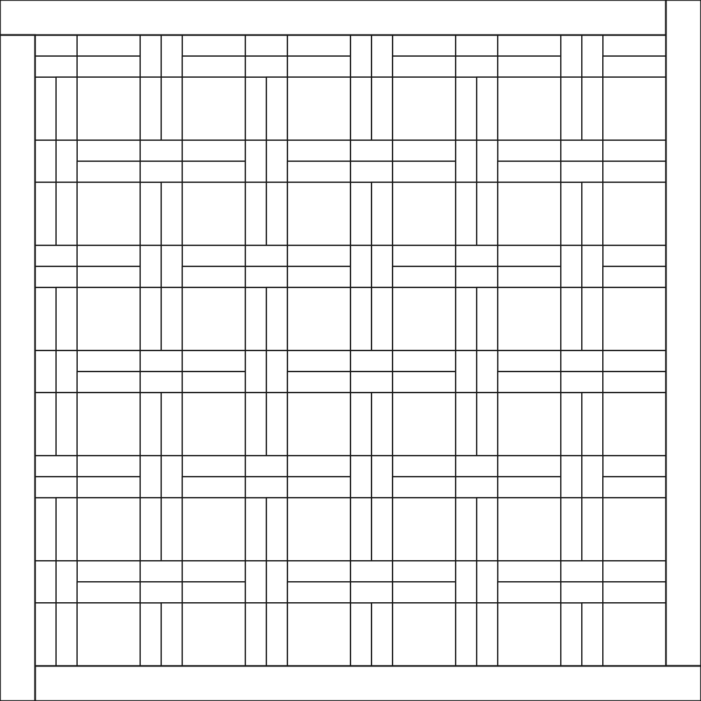

Patroonvloeren
De rijkdom van ons vak in verhoudingen, legrichtingen, houtkeuze en nauwkeurige verbindingen.
Visgraat, vlechten, blokken, rozetten en sierpatronen. Samen laten ze zien wat er allemaal mogelijk is met parket.
Eerste selectie: 10 van de beoogde 100 ontwerpen.

De rijkdom van ons vak in verhoudingen, legrichtingen, houtkeuze en nauwkeurige verbindingen.
Persoonlijke verhalen en beelden in hout. Een andere vorm van dezelfde creativiteit en aandacht.
Van visgraat en blokpatronen tot vlechten, sterren en sierpatronen: samen vertellen ze het verhaal van ons vak. Door zoveel mogelijk verschillende patronen samen te brengen, geven we opdrachtgevers, bezoekers en toekomstige vakmensen een beeld van wat er mogelijk is.
Kies een patroon dat je graag legt, waar je trots op bent, dat je wilt leren of waarvan je vindt dat het behouden moet blijven. Je bijdrage hoeft niet ingewikkeld te zijn om waardevol te zijn.
Betrek een leerling, jonge collega, school of andere geïnteresseerde. Laat diegene meedenken, uitzetten, zagen en leggen. Zo ontstaat er samen een werk én krijgt vakkennis een volgende generatie.
Ervaren legger of beginner: iedereen kan bijdragen. Zelfstandig meedoen is ook welkom.
Bekijk de eerste tien studies. Open een tekening voor een groter beeld.
100 × 100 cm totaal · verplichte eiken molenwiekband van 5 cm · binnenvlak 90 × 90 cm. Geen extra buitenbanden. De tekeningen tonen een patroonstudie; maatvoering en zaagplan worden per werk uitgewerkt.
Stem de afmetingen van de onderdelen af op het binnenvlak van 90 × 90 cm. Werk met kleinere delen, zodat het patroon zich voldoende kan herhalen en goed tot zijn recht komt. Het gaat om het volledige patroonbeeld: laat zien hoe de vormen en verbindingen samen de vloer maken.
Probeer de keuze: vink maximaal twee patronen aan. Dit blijft een voorbeeldkeuze op deze pagina. Er wordt niets gereserveerd of verzonden.
De tekeningen worden geladen…
Alle 100 ontwerpen zijn vrij te bekijken. Een eigen patroon of een inhoudelijk andere variant voorstellen blijft mogelijk.
Een persoonlijke e-maillink bevestigt wie je bent. Maximaal twee openstaande keuzes per deelnemer; meer werken maken kan in overleg.
Een aanvraag blokkeert het patroon nog niet. Het team bevestigt de reservering en kan ongebruikte keuzes weer vrijgeven.
Laat weten wanneer je begint. Deel het werk en, als je samenwerkt, wie meededen en wat jullie leerden.
De reserveringsfunctie, e-mailverificatie en automatische herinneringen zijn nog niet actief in deze preview.